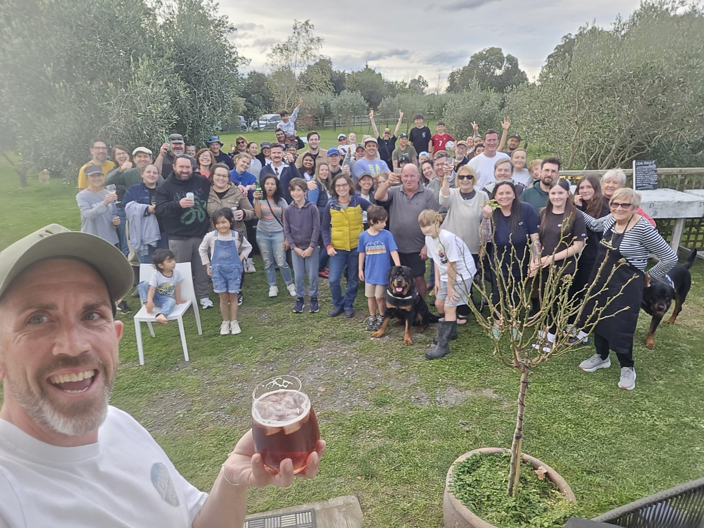
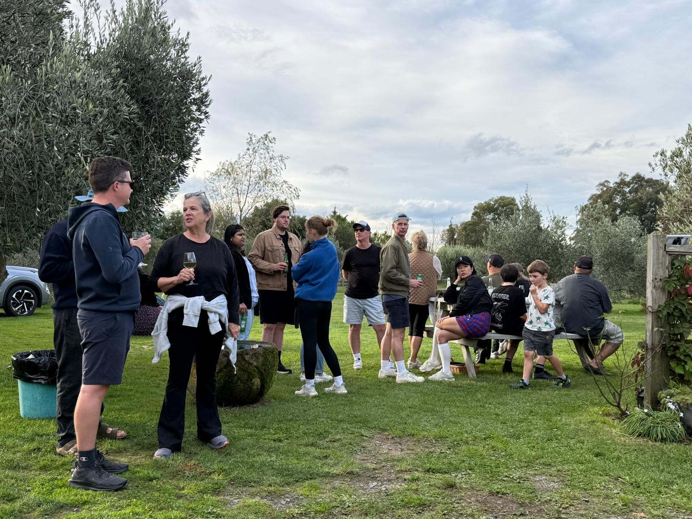
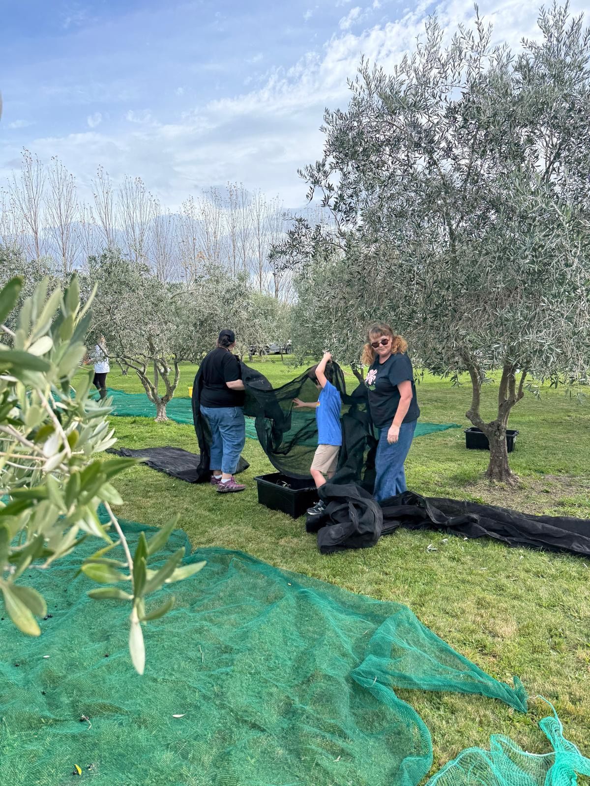
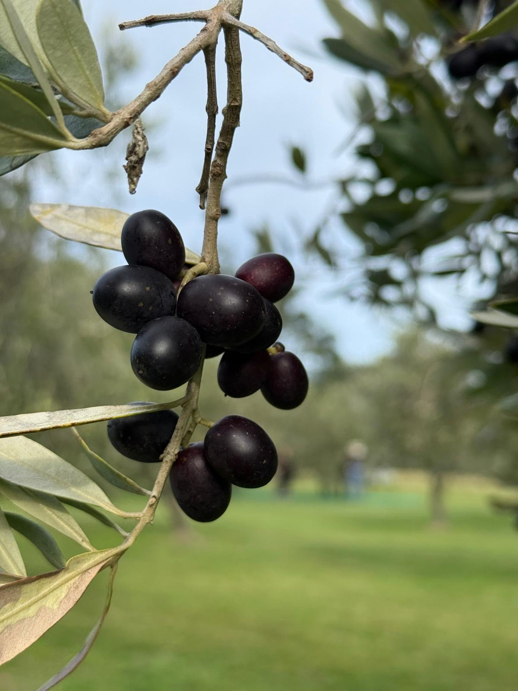
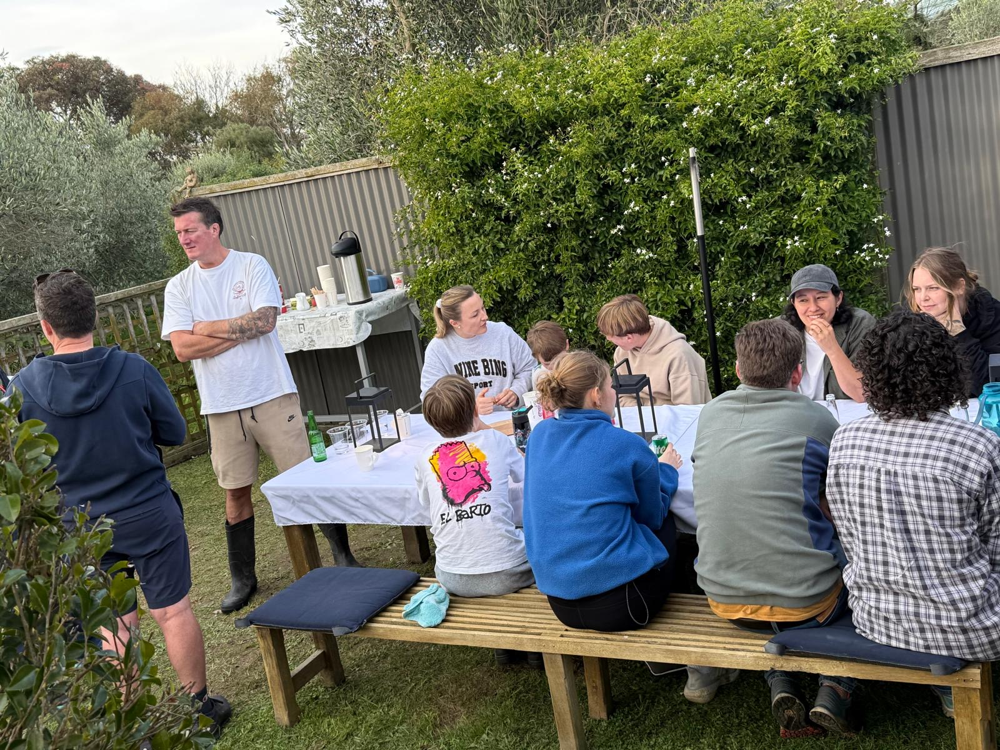
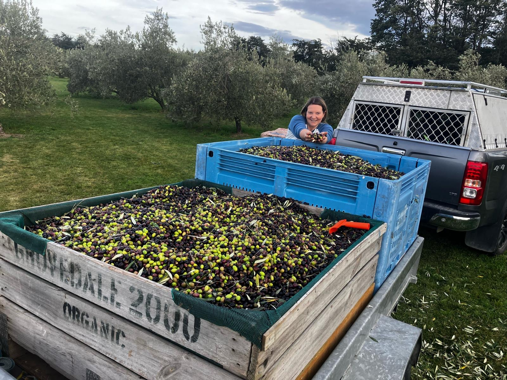
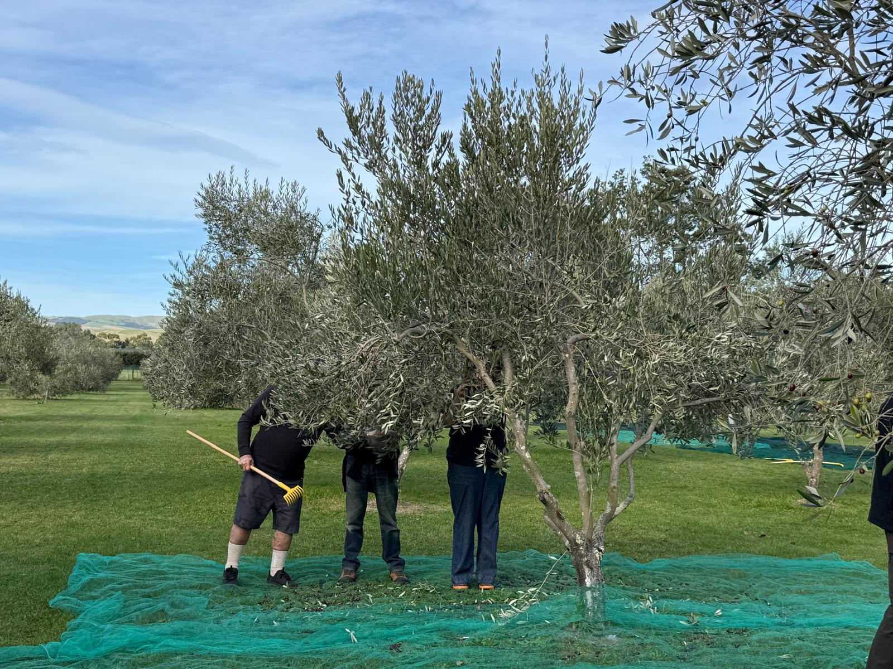

A note from Peter & Matt
[PERSONALISE: Opening line — e.g. "What a day. What a season. What a crew."] Every year when harvest rolls around we find ourselves genuinely moved by the people who show up — often at an ungodly hour, often without much more than a hat and good humour — and give their Saturday to our little grove.
This year was no different. [PERSONALISE: Add a specific memory or moment — the weather, a funny moment, a first-timer's reaction.] Having you out there, hands in the branches, made the whole thing feel less like work and more like something we'll talk about for years.
From the bottom of our hearts — thank you. The oil wouldn't be the same without you, and honestly, neither would the day.
A 15.2% yield is a really strong result — typical extra-virgin cold-press runs 12–14%.
That's down to the quality of the fruit, and the care everyone put into the pick.
A few snaps from the day.






Our grove grows four varieties that each bring something to the blend. Frantoio — the classic Tuscan cultivar — gives structure and longevity, with a robust, grassy intensity that softens beautifully over time. Barnea adds brightness and fresh fruit. Leccino contributes a milder, buttery note that rounds the blend out, while Koroneiki — the tiny Greek powerhouse — punches in with peppery intensity and high polyphenols.
Together they make an oil that's genuinely versatile: good raw over bread, great in dressings, and honest enough to just taste on its own with a crust of sourdough.
Bright grassy green on the nose. Pepper on the finish — a proper Martinborough bite. Fresh-pressed stone-fruit mid-palate. Best used within 18 months.
You earned this — literally. As a thank-you for picking with us, here's 50% off your first order of the 2026 oil. Use the code below at checkout.
Copy the code, then head to the shop
Shop The Olive Green[OPTIONAL: Add an expiry date, e.g. "Code valid until 31 December 2026"]
[PERSONALISE: A final warm line — e.g. "The 2027 harvest will be here before we know it. We hope you'll be back."] In the meantime, enjoy the oil. You picked it. You earned it.
With enormous gratitude,